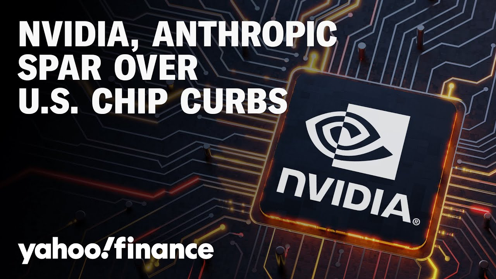

来B站一起耍【Global每日英语简报】
【英伟达称Anthropic关于中国芯片走私的言论是“无稽之谈”】
Summary: Nvidia accuses Anthropic of exaggerating chip smuggling claims amid US export rule tensions, with both firms clashing over AI competitiveness and China restrictions.
摘要： 英伟达指责Anthropic夸大芯片走私指控，双方因美国出口限制新规在AI竞争力和对华限制问题上产生分歧。

⏱️ Estimated Reading Time: 7 min
Chipmaker Nvidia claims Amazon-backed AI startup Anthropic is telling tall tales about international chip smuggling as the two companies clash ahead of a rule that would curb US chip exports.
芯片制造商英伟达称亚马逊投资的AI初创公司Anthropic关于国际芯片走私的言论是无稽之谈，双方在美国芯片出口限制新规出台前产生冲突。
Here with more, we've got Yahoo Finance tech editor Dan Howie.
雅虎财经科技编辑Dan Howie将为我们带来更多细节。
Dan, just take us into this.
Dan，请为我们解读一下。
What's what's dividing Nvidia and Anthropic here?
英伟达和Anthropic的分歧究竟是什么？
Yeah, it's a kind of a statement that Anthropic came out with uh earlier to uh yesterday actually.
是的，这源于Anthropic昨天早些时候发表的一份声明。
Uh it's about the AI diffusion rule that the US is kind of mulling right now.
该声明涉及美国正在考虑的AI技术扩散规则。
It was a piece of uh legislation or or a move that the Biden administration had put into place.
这是拜登政府实施的一项立法或举措。
Not necessarily legislation, but uh it's part of a a department of commerce framework.
虽不一定是立法，但属于商务部框架的一部分。
Uh and so what it does is it essentially sets up three different buckets of countries and then allocates uh whether or not they need certain licenses to buy AI chips or limits the number that they can buy each year.
该规则将国家分为三个类别，并规定它们是否需要特定许可证购买AI芯片或限制其年度购买量。
Now uh the kind of idea is that this is going to at least from Nvidia's side limit the amount of chips that they can sell uh and Nvidia says uh as well as Microsoft says that it would hurt US competitiveness uh around the world in the AI space.
英伟达和微软认为，这将限制英伟达的芯片销量，并损害美国在全球AI领域的竞争力。
Anthropic is taking the other stance.
Anthropic则持相反立场。
they're kind of in favor of the move here to ensure uh as they say it basically cementing uh US AI supremacy at this point uh and uh keeping China kind of back behind the US.
他们支持这一举措，认为这将巩固美国在AI领域的主导地位，并遏制中国的发展。
Uh and so this is this kind of back and forth that you're seeing and it's interesting uh because you know Amazon backs anthropic Amazon big Nvidia customer but Amazon also produces its own chips.
这种争论很有趣，因为亚马逊既是Anthropic的支持者，也是英伟达的大客户，同时还在自研芯片。
Uh Amazon obviously is going to continue to offer Nvidia chips.
亚马逊显然会继续提供英伟达芯片。
Uh so it's it's it's an interesting dynamic here that we're seeing with you know a uh kind of back and forth.
因此，这种多方博弈的局面非常耐人寻味。
And so the uh the actual kind of uh comment of the tall tale uh is uh uh from Nvidia saying that uh anthropic claiming that chip smuggling into China can take the form of people using prosthetic baby bumps uh and packaging GPUs alongside live lobsters.
英伟达称Anthropic关于芯片走私的“无稽之谈”包括使用假孕肚藏匿芯片或将GPU与活龙虾混装的说法。
So, in a comment to CNBC, uh, Nvidia basically said that's not what's happening.
英伟达在给CNBC的评论中表示，这些情况并不存在。
Uh, they said it's tall tales and that the idea of moving sensitive chips inside, uh, containers with live lobsters doesn't really make sense.
他们称这些是无稽之谈，将敏感芯片与活龙虾混装运输的说法毫无逻辑。
So I mean look it is worth noting that some analysts have said that the amount of money that Nvidia makes out of China not directly from China but through chip movement uh is a lot higher than uh the actual Chinese uh uh revenue that shows up on the uh the earnings report.
值得注意的是，有分析师指出英伟达通过转口贸易从中国获得的收入远高于财报中显示的中国市场直接收入。
So I mean it is something that that's come up before uh you know again these are analysts speaking not Nvidia uh and they say that uh in their own reports that anything that goes into Singapore specifically doesn't necessarily stay with Singapore doesn't go to China but goes around the world to different areas.
分析师（非英伟达官方）在报告中提到，经新加坡转口的芯片未必留在当地或流向中国，而是分销至全球其他地区。
So you know as far as Nvidia is concerned there's there's no real issues with with you know chip smuggling in and China.
因此英伟达认为并不存在所谓的对华芯片走私问题。
Yeah the old-fashioned those aren't lobsters those are semiconductors.
“老把戏了——那些不是龙虾，是半导体。”
uh the US also weighing removing NVIDIA chip curves on the UAE.
美国还考虑取消对阿联酋的英伟达芯片限制。
What do we know about that so far?
目前有哪些信息？
Yeah, so as part of the AI diffusion rule, there's there's those tiers.
根据AI技术扩散规则，国家被分为不同层级。
And so there's the first tier uh which are certain US allies.
第一层级是美国的部分盟友。
There's a second tier uh which uh some US allies find themselves in.
第二层级包含其他一些美国盟友。
Uh and then there's a third tier which is basically, you know, an arms embargo essentially.
第三层级则基本等同于军火禁运国。
Uh so if you wouldn't sell a missile to a country, you're not going to sell them uh or let them buy GPUs.
即“若不能向某国出售导弹，也不会允许其购买GPU”。
It's the middle that the UAE finds itself in.
阿联酋处于中间层级。
And so, uh, the, uh, kind of conversation here is, uh, between President Trump and the UAE and whether or not, uh, they'll be able to get a, uh, leeway as far as the the AI diffusion act, whether or not they'll have, uh, kind of a a bilateral agreement with the US where they'll be able to get access to these chips.
目前讨论焦点是特朗普政府是否会与阿联酋达成双边协议，使其在AI技术扩散法案下获得芯片采购豁免。
And I think that's really the the kind of conversation that's going on here.
这才是当前谈判的核心内容。
One of the concerns that's been raised about the AI diffusion rules uh and uh a kind of suggested uh uh move where the US would talk to individual countries about getting AI chips is that Nvidia's chips or or other AI companies but it's it's Nvidia uh would then be used as a bargaining chip in uh the overall tariff conversation.
有人担忧AI技术扩散规则可能导致英伟达芯片在关税谈判中被用作筹码。
That's been an ongoing fear uh for quite a while about uh Nvidia and and their AI chips and what they're capable of.
这种对英伟达芯片被政治化的担忧已持续多时。
So, this is kind of again just leading into these discussions about where Nvidia stands uh in these conversations and how long this is going to continue to drag on.
这再次引发关于英伟达立场及争端持续时间的讨论。
Uh you know, Nvidia reports at the end of the month.
英伟达将于月底公布财报。
Uh now we're in May.
当前正值五月。
Uh, and so we'll see how they perform, but you know, obviously any easier way for them to get chips to to customers is a huge bo for
届时我们将看到其表现，但显然更便捷的芯片销售渠道对其至关重要。